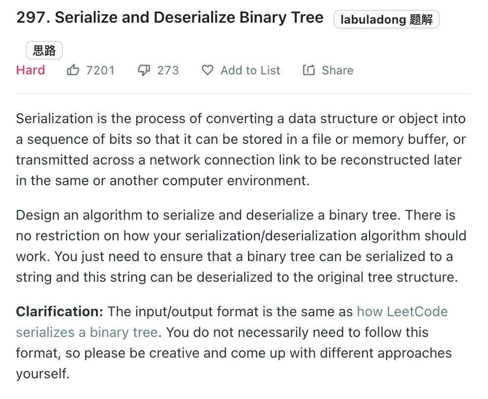
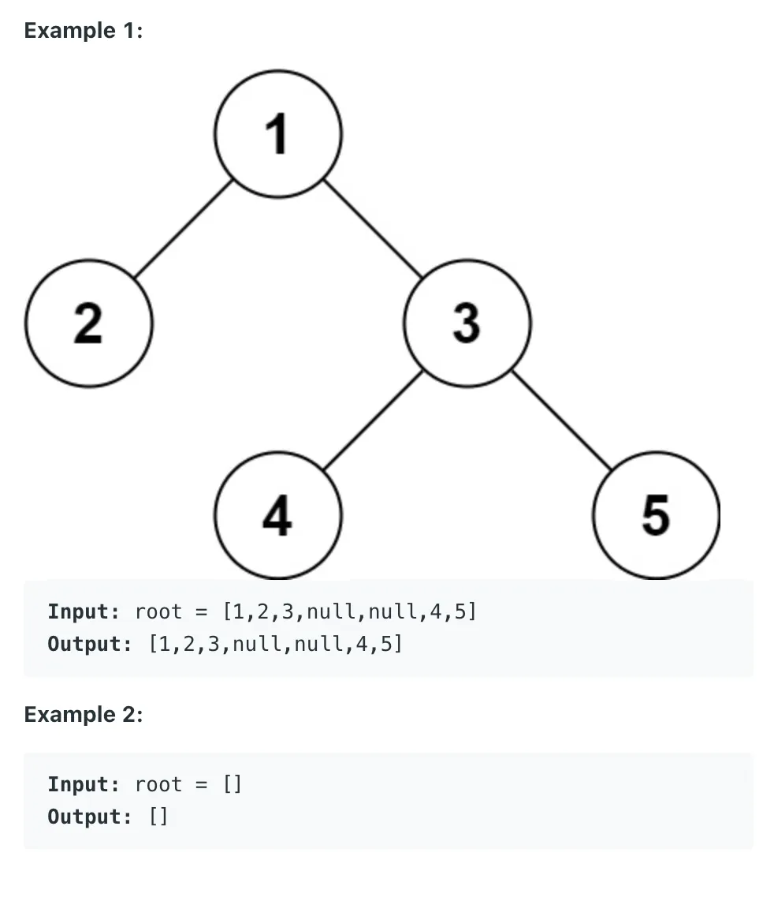
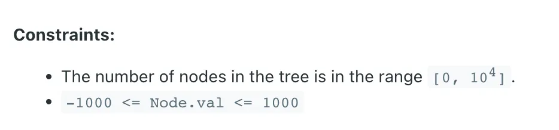

297. Serialize and Deserialize Binary Tree
考過的公司：Asked by: Amazon, Bytedance, Google, tiktok
Question



先自己想想看 🤔Try it yourself first 🤔
✍🏽 My Solution - DFS
Runtime: 18 ms, faster than 68.50% of Java online submissions for Serialize and Deserialize Binary Tree.
Memory Usage: 50.8 MB, less than 78.16% of Java online submissions for Serialize and Deserialize Binary Tree.
public class Codec {
private static final String spliter = ",";
private static final String NN = "X";
StringBuilder sb = new StringBuilder();
// Encodes a tree to a single string.
public String serialize(TreeNode root) {
buildString(root);
return sb.toString();
}
private void buildString(TreeNode node) {
if (node == null) {
sb.append(NN).append(spliter);
} else {
sb.append(node.val).append(spliter);
buildString(node.left);
buildString(node.right);
}
}
// Decodes your encoded data to tree.
public TreeNode deserialize(String data) {
Queue<String> queue = new LinkedList<>();
String[] nodes = data.split(",");
for (String n : nodes) {
queue.add(n);
}
return buildTree(queue);
}
private TreeNode buildTree(Queue<String> queue) {
String cur = queue.poll();
if (cur.equals(NN)) return null;
else {
TreeNode node = new TreeNode(Integer.valueOf(cur));
node.left = buildTree(queue);
node.right = buildTree(queue);
return node;
}
}
}
🧠 Thought Process
- Why did I choose this particular implementation?
- preorder
- 序列化的時候會變成 [1,2,null,null,3,4,null,null,5,null,null]
- What is the time/space complexity of my solution? How do I know?
- time: O(n)
- space: O(n)
Solution #1 [BFS]
Runtime: 44 ms, faster than 24.14% of Java online submissions for Serialize and Deserialize Binary Tree.
Memory Usage: 53 MB, less than 47.35% of Java online submissions for Serialize and Deserialize Binary Tree.
public class Codec {
StringBuilder sb = new StringBuilder();
public String serialize(TreeNode root) {
if (root == null) return "";
Queue<TreeNode> queue = new LinkedList<>();
queue.offer(root);
while (!queue.isEmpty()) {
TreeNode cur = queue.poll();
if (cur == null) {
sb.append("X").append(",");
continue;
}
sb.append(cur.val).append(",");
queue.offer(cur.left);
queue.offer(cur.right);
}
System.out.println(sb.toString());
return sb.toString();
}
public TreeNode deserialize(String data) {
if (data == "") return null;
Queue<String> nodes = new LinkedList<>();
String[] strArr = data.split(",");
for (String n : strArr) {
nodes.add(n);
}
TreeNode root = new TreeNode(Integer.parseInt(nodes.poll()));
Queue<TreeNode> queue = new ArrayDeque<>();
queue.offer(root);
while (!queue.isEmpty()) {
TreeNode node = queue.poll();
String left = nodes.poll();
String right = nodes.poll();
if (!left.equals("X")) {
node.left = new TreeNode(Integer.parseInt(left));
queue.add(node.left);
}
if (!right.equals("X")) {
node.right = new TreeNode(Integer.parseInt(right));
queue.add(node.right);
}
}
return root;
}
}
Explanation (in my words)
- How does their solution work?
- 序列化 用BFS遍历树，与一般遍历的不同点是不管node的左右子节点是否存在，统统加到队列中 在节点出队时，如果节点不存在，在返回值res中加入一个”null“；如果节点存在，则加入节点值的字符串形式
- 反序列化 同样使用BFS方法，利用队列新建二叉树 首先要将data转换成列表，然后遍历，只要不为null将节点按顺序加入二叉树中；同时还要将节点入队 队列为空时遍历完毕，返回根节点
Solution #2 [BFS 優化]
Runtime: 20 ms, faster than 62.70% of Java online submissions for Serialize and Deserialize Binary Tree. Memory Usage: 53.6 MB, less than 41.93% of Java online submissions for Serialize and Deserialize Binary Tree.
/**
* Definition for a binary tree node.
* public class TreeNode {
* int val;
* TreeNode left;
* TreeNode right;
* TreeNode(int x) { val = x; }
* }
*/
public class Codec {
StringBuilder sb = new StringBuilder();
public String serialize(TreeNode root) {
if (root == null) return "";
Queue<TreeNode> queue = new LinkedList<>();
queue.offer(root);
while (!queue.isEmpty()) {
TreeNode cur = queue.poll();
if (cur == null) {
sb.append("X").append(",");
continue;
}
sb.append(cur.val).append(",");
queue.offer(cur.left);
queue.offer(cur.right);
}
return sb.toString();
}
public TreeNode deserialize(String data) {
if (data == "") return null;
String[] values = data.split(",");
Queue<TreeNode> queue = new LinkedList<>();
TreeNode root = new TreeNode(Integer.parseInt(values[0]));
queue.offer(root);
for (int i = 1; i < values.length; i++) {
TreeNode parent = queue.poll();
//因为在BFS中左右子节点是成对出现的，所以这里挨着的两个值一个是左子节点的值 一个是右子节点的值
if (!values[i].equals("X")) {
TreeNode left = new TreeNode(Integer.parseInt(values[i]));
parent.left = left;
queue.add(left);
}
// 上面如果不为空就是左子节点的值，这里是右子节点的值，注意这里有个i++
i++;
if (!values[i].equals("X")) {
TreeNode right = new TreeNode(Integer.parseInt(values[i]));
parent.right = right;
queue.add(right);
}
}
return root;
}
}
// Your Codec object will be instantiated and called as such:
// Codec ser = new Codec();
// Codec deser = new Codec();
// TreeNode ans = deser.deserialize(ser.serialize(root));
Explanation (in my words)
- How does their solution work?
- 序列化時 1,2,3,X,X,4,5,X,X,X,X,
- 跟上面的差別在反序列化